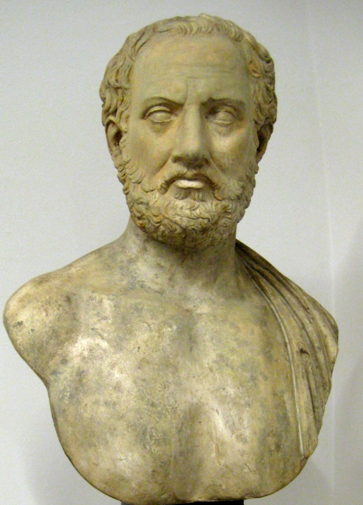
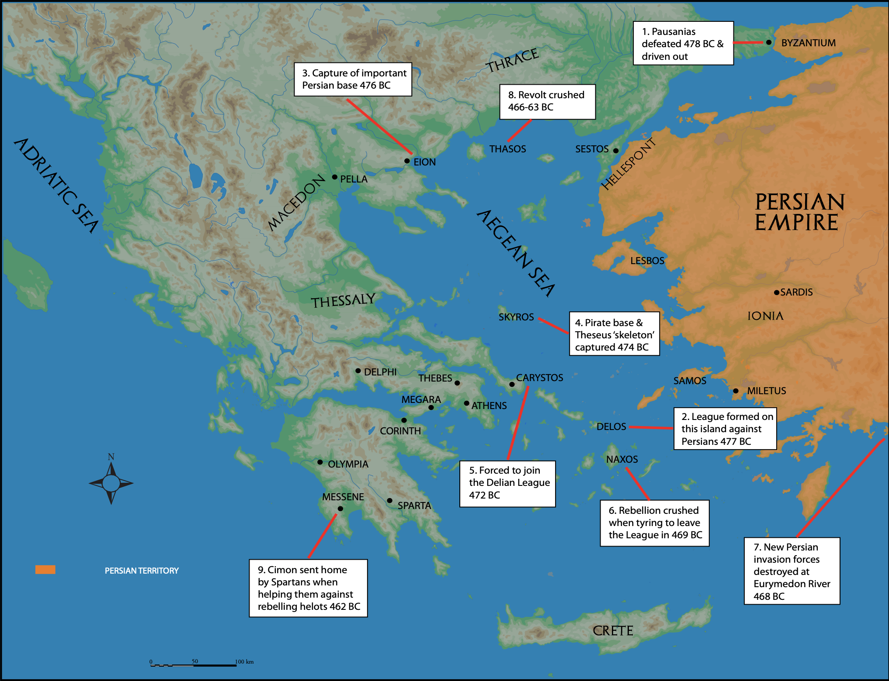
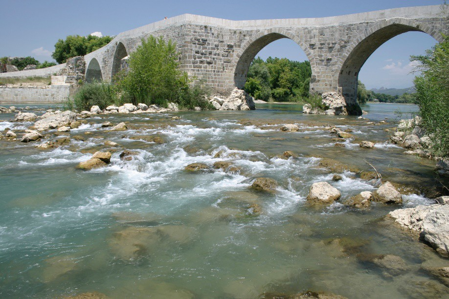

There are three things you should remember about Thucydides' brief account of the early actions of the Delian League:
He mentions only those incidents which had a direct bearing on his theme, that is, the growth of Athenian imperialism. There may well have been other actions taken by the League members but we have no evidence of these.
According to Thucydides it appears that the Athenians did all the work. Although Athens was the leader, the actions were all carried out as an allied effort.
Although the aims of the Delian League from the beginning were to free those Greeks and city-states from the control of Persia, the League forces were also starting to be used against other Greek city-states.
478 – 474 BC
Pausanias was driven out of Byzantium and the city captured. This cut the Persians off from their garrisons in Thrace and gave the Greeks access once again to the valuable trade of the Black Sea.
The town of Eion, at the mouth of the Strymon River, occupied a very strategic position on the major east-west land route. It was also of great economic importance. The gold mines of Mt Pangaeus were nearby and the town was a centre of exchange for precious ores, timber, and corn.
The Persian commander, Boges, defended it heroically but when defeat was obvious, he built a pyre and he and his family committed suicide after throwing all their possessions into the river.
The rocky island of Scyros was the stronghold of a group of non-Greek pirates. This had nothing to do with Persia. Plutarch suggests an oracle instructed Cimon to capture the island and recover the bones of Theseus. An important result was the establishment of an Athenian kleruchy on the island.

Athens later established kleroi all over the Aegean area. This was another indication of Athens' plans to extend its sphere of influence.
Carystus, on the southern tip of Euboea, had been unwilling to join the Delian League so the League used force or coercion to enrol it in the League. Why did they do this?
Carystus had collaborated with the Persians in 480 BC by sending ships to the Persian fleet after the Battle of Artemisium. Members of the League, particularly Athens, thought they might do so again.
The position of Carystus, close to Athens and dominating the sea route between Euboea and Andros, made this possibility very dangerous. It is possible that the members also thought that Carystus was enjoying all the advantages of League membership (protection) without any of the responsibilities.
However, to make war on a state which desired to remain neutral, and to deprive it of its independence was an outrage to most Greeks. The only justification the League could make was that of political necessity, as the Persians were still a major threat in the region.
...Naxos left the League and the Athenians made war on the place. After a siege Naxos was forced back to allegiance. This was the first case when the original constitution of the League was broken and an allied city lost its independence...
The Revolt and Subjugation of Naxos — Naxos was one of the largest islands in the Aegean and an important ship-contributing member. Although it is not certain what punishment was meted out, it probably lost its independence and its right to vote in the council at Delos. Naxos was the first example of what was to become a recurring pattern — a subject state which paid tribute.

The coasts of Caria and Lycia were still in Persian hands. According to Plutarch, Cimon sacked or destroyed some cities and induced others to revolt or annexed them, until not a single Persian soldier was left on the mainland of Asia Minor from Ionia to Pamphylia.
“Cimon sacked or destroyed some cities and induced others to revolt or annexed them, until not a single Persian soldier was left on the mainland of Asia Minor from Ionia to Pamphylia.”
Plutarch, Cimon 12
The Greek city of Phaselis refused to revolt against Persia and join Cimon's campaign. Cimon attacked Phaselis and devastated the countryside until the population agreed to be enrolled in the League.
...he threw back the barbarians with great slaughter and captured the army and its camp which was full of all kinds of spoil.
The Battle of Eurymedon — 468 BC
This was the most ambitious and costly campaign ever undertaken by the League fleet. Cimon not only inflicted a crushing defeat on the Persian navy but on the same day defeated the land army. He then intercepted and captured eighty Phoenician ships from Cyprus sent as reinforcements.